About BIDA
BIDA is a Boston-area group dedicated to promoting involvement in traditional dance and connecting generations by:- Encouraging dance musicians and callers
- Promoting intergenerational dancing
- Fostering growth in the traditional dance community
- Providing opportunities and resources for dance organizing
- Providing financially and logistically accessible events
- Providing educational and mentoring opportunities
- Building community through social events
BIDA was formed in the fall of 2008 in an effort to fill a niche not served by other dance groups in the area. While Boston had and still has a rich and vibrant traditional dance scene, there was not as much intergenerational interaction as there could be in many of the Boston dance communities. BIDA's founders hoped to create an organization which would strengthen community ties and provide opportunities for dancers, musicians, callers, and dance organizers to share knowledge and energy between generations.
History of BIDA
To kickstart the community focus of its events, BIDA began by organizing potlucks which combined music and dance with conversations about dance communities, what different people hoped to find in a dance community, and what BIDA could do toserve their needs. These conversations shaped the goals that BIDA strives to promote with every event.
BIDA's first public contra dance was held in February of 2009, at the
Park Ave. Congregational Church in Arlington. The attendance and
energy at this event showed that the Boston community was indeed ready
to welcome and support an additional dance group. While the PACC is a
very nice venue, one of BIDA's goals is to hold dances in a hall that
is easily accessible by public transportation. After an extensive
search, BIDA settled in the Masonic Hall in Cambridge, which we are
thrilled to call home. In addition to having a large stage, a great
floor, and a disco ball, this hall is less than a block from the
Porter Square T station! BIDA now runs a bimonthly dance at the
Masonic Hall on first and third Sundays, as well as occasional
parties, jam sessions, workshops, and special event dances at various
locations. To keep up-to-date on BIDA events, please join our mailing list or Facebook
group. For more information, please email
bida@bidadance.org.
Board Members and Roles
May 2022 - Apr 2023Emma Azelborn (Outreach Coordinator, Secretary)
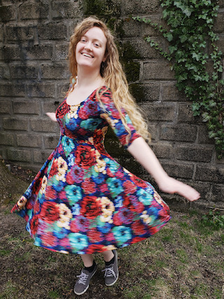
Harris Bard Lapiroff (Caller Booking, Intraboard Coordinator)
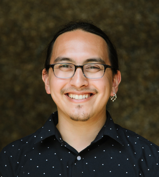
Jeff Kaufman (Website)

Kelly Huang (Musician Booking, Open Bands, Sound Coordination, Spark in the Dark)
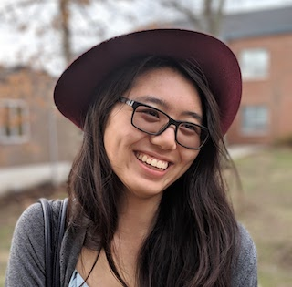
Naomi Ingber (Family Dances, Email Lists)
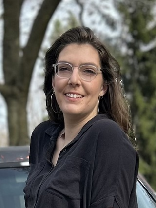
Persis Thorndike (Volunteer Coordinator, Secretary)
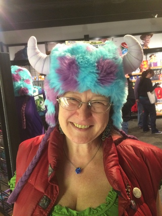
Veer Dedhia (Treasurer)
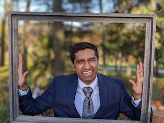
Former Board Members
Eric McDonald (2008-2009), no photoDave Casserly (2008-2011)
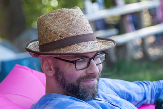
Chris Weiler (2009-2011), no photo
Koren Wake (2009-2011)
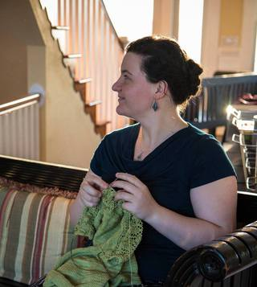
Martha Friedman (2009-2012), no photo
Daniel Friedman (2009-2015)
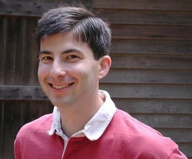
Alex Krogh-Grabbe (2010-2012)
Sally Bown (2011-2012), no photo
Andrew Stout (2011-2013)
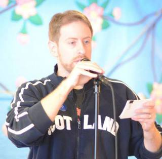
Michael Bergman (2011-2014)
Max Newman (2012), no photo
Heather Carmichael (2012), no photo
Ben Sachs Hamilton (2012-2013)
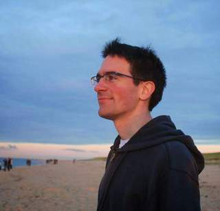
Audrey Knuth (2013-2015)
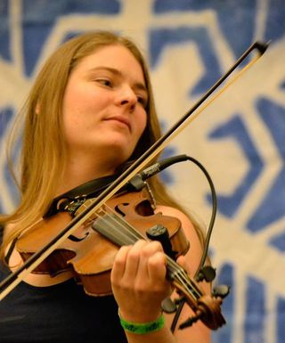
Amy Englesberg (2013-2014)
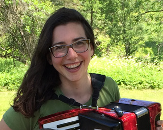
Kathleen Fownes (2014)
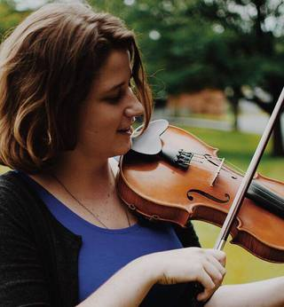
Sam Auciello (2014-2016)
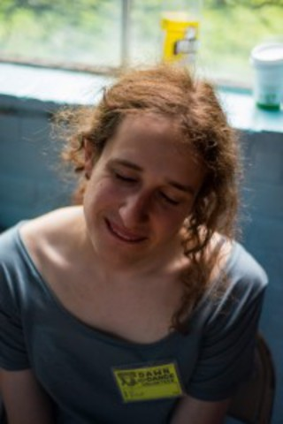
Daniel Ley (2014-2016)
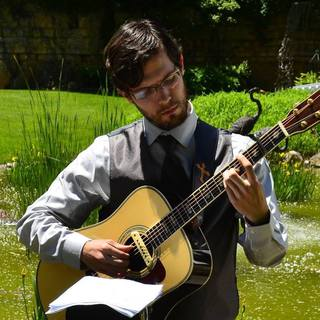
Ryan McLoughlin (2016-2017), no photo
Angela DeCarlis (2015-2018)
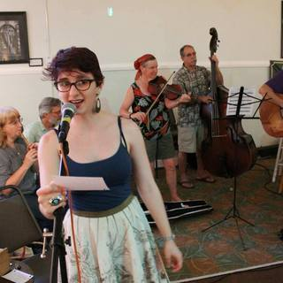
Cecile Leroy (2017-2018)
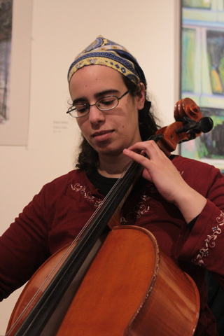
Avalon (A.Z.) Madonna (2016-2019)
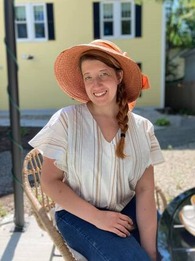
Julie Vallimont (2008-2020)
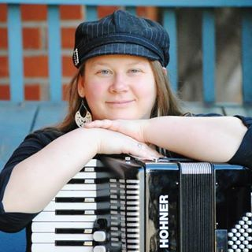
Rachel Sensenig (2017-2022)
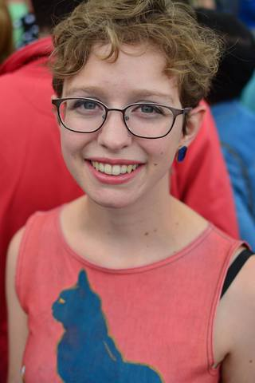
Marcus Graly (2017-2022)
Sarah Hirsch (2013-2022)
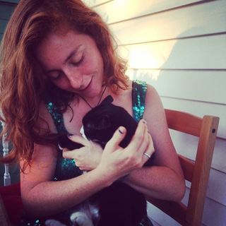
Ben Rechel (2022-2023)